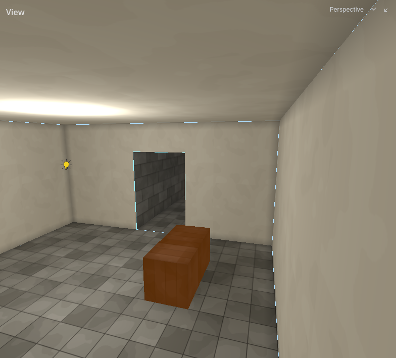

Core
Hammerite builds a carved world. The map starts as solid rock and you carve rooms out of it with air brushes. Walls, floors, openings, and which rooms connect all follow from the carve, and are worked out again after every edit.

Read The carved world first. Most building mistakes come from treating a Hammerite map as walls built in a void.
What the core section covers
This section says what things are and what they mean for the level. The Editor section says how to make them.
| Page | What it covers |
|---|---|
| The carved world | Solid by default, the three tiers, brush order, overlap to extend and abut to divide |
| Rooms and portals | Cells, rooms, openings, naming doorways, interior and exterior |
| Fills | Filling a room with water |
| Entities | Point entities, brush entities, lights, props, decals |
| Textures | Texture names, texture scale, and the !, sky_ and _emission conventions |
| Lighting | Lights, sky and daylight, emissive surfaces, water, bounce |
| Baking | What a bake produces, when it is out of date, bake warnings |
| Variants | One map in several states |
| Terrain | Sculptable ground made of detail |
| Glossary | Every term, one line each |
Other sections
- Editor: building, texturing, placing entities, baking in the editor.
- Audio: how sound travels through the rooms you carve.
- Navigation: where guards and other agents can walk.